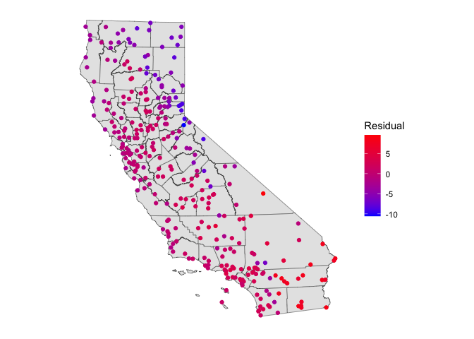

Prediction Modelling
GEO 200CN - Quantitative Geography
Professor Noli Brazil
May 15, 2024
In class so far, we’ve learned how to use regression models mostly within the context of description and inference. Starting in this lab, we will learn how to employ regression (and quantitative tools more generally) for predictive purposes. Specifically, the objectives of this lab are as follows
- Learn how to use regression in a prediction framework
- Learn about testing and training your data
- Learn how to run cross validation to calculate test error rates
To help us accomplish these learning objectives, we will use temperature data for California weather stations to predict a numeric outcome (temperature) and data from the Behavioral Risk Factor Surveillance System (BRFSS), an annual survey conducted by the Centers for Disease Control and Prevention to predict a binary outcome (fair/poor health or not). The lab follows closely this week’s readings in ISLR.
Installing and loading packages
We’ll be using two new packages in this lab. First, install them if you haven’t already.
install.packages(c("dismo", "boot"))Next load them and the other packages we need using
library().
library(dismo)
library(boot)
library(sf)
library(tidyverse)Bring in the data
Download the data for this lab guide from Canvas in the Week 7 Labs and Assignment folder. All the data are zipped into the file prediction.zip. First, bring in the BRFSS file brfss16.csv file into R.
brfss16 <- read_csv("brfss16.csv")The BRFSS is an annual survey that collects state data about U.S. residents regarding their health-related risk behaviors, chronic health conditions, and use of preventive services. The data contain individuals as units of observations. The main goal of the analysis is to examine characteristics that help predict self-reported bad health, where bad health is an indicator of whether the respondent reported “yes” to the question: “In general, would you say that in general your health is Fair/Poor?” Our dependent variable is badhealth and our independent variables are age agec, gender male, educational attainment educ, race/ethnicity race_eth, whether the individual indicates they smoke, employment status employ, marital status marst, body mass index bmi and income inc. A record layout of the data can be found here
Next, bring in the California temperature dataset temperature.csv
ca.temp <- read_csv("temperature.csv")The file contains the average monthly temperature in Celsius. We need
to do some data prep before we can start using this data set. Let’s
create a new variable that represents the mean monthly temperature,
which will be our response variable, using the function
rowMeans().
ca.temp <- ca.temp %>%
mutate(temp = rowMeans(dplyr::select(ca.temp, JAN:DEC)))Let’s map the stations so we can visualize their geographic locations
across the state. We have longitude and latitude. First, we need to
convert ca.temp into a spatial sf object.
Here, we use the function st_as_sf() and use an appropriate
coordinate
reference system.
ca.temp.sf <- ca.temp %>%
st_as_sf(coords = c("LONG", "LAT"),
crs ="+proj=longlat +datum=NAD83 +ellps=GRS80")Let’s then bring in a California counties layer.
cacounties <- st_read("counties_2000.shp")Next, we need to transform both layers to a planar CRS (Teale Albers
in this case) to assure that the computations we perform later are OK.
That is, we want to avoid interpreting angles as if they were planar
coordinates. We’ll use the st_transform() function to
reproject each sf object into the appropriate CRS.
TA <- crs(" +proj=aea +lat_1=34 +lat_2=40.5 +lat_0=0 +lon_0=-120 +x_0=0
+y_0=-4000000 +datum=NAD83 +units=m +no_defs +ellps=GRS80 +towgs84=0,0,0")
ca.temp.sf<- st_transform(ca.temp.sf, TA)
cacounties<- st_transform(cacounties, TA)st_crs(ca.temp.sf) == st_crs(cacounties)## [1] TRUEFinally, map the stations by their mean monthly temperature.
ggplot(data = cacounties) +geom_sf() +
geom_sf(data = ca.temp.sf, aes(color = temp)) +
scale_color_gradient(low = "blue", high = "red", name ="Temperature") +
theme( axis.text = element_blank(),
axis.ticks = element_blank(),
panel.background = element_blank())
Now on to the modelling!!
Classification
As discussed in the introduction to this lab guide, we’re now entering the phase of the class where we go from using models and methods to describe and infer to those that predict. In the prediction world, we’re primarily concerned about the quality of our predictions rather than trying to describe a relationship or infer causality. In other words, we create a model to predict a phenomena and then test whether our model does a good job of predicting that phenomena.
In the case of a binary outcome, we are trying to predict whether an observation belongs in one class or another. For example, predicting whether a person will report they’re in poor/fair health or not. We learned about logistic regression, which handles binary outcomes, in a prior lab. For a logistic regression model or any model that has a categorical outcome variable, prediction is known as classification.
First, let’s run a multiple logistic regression predicting the variable reporting Fair/Poor health (yes or 1) or not (no or 0) badhealth.
logit.fit <- glm(badhealth ~ bmi + race_eth + agec + male + smoke + educ + inc +
employ + marst ,
family = binomial,
data = brfss16)Next, we predict the probability of reporting bad health for the
367,873 observations in our original data. We use the
predict() function.
pfit <- predict(logit.fit, type = "response")Here, we are not predicting for a new set of observations, but rather for our original 367,873 observations. In other words, pfit contains the fitted values based on the model logit.fit.
Remember that our original variable is a 0, 1 variable - “not bad
health”, “bad health.” So, we now need to convert the probabilities into
one of these categories. What is typically done is if the predicted
probability is greater than 0.5, designate it a 1 (“bad health”). We do
so in the following code using the ifelse() command. We
save the classification back into the data set using
mutate().
brfss16 <- brfss16 %>%
mutate(pprob = pfit,
pclass = ifelse(pprob > 0.5, 1, 0))The first argument in the mutate command saves the
vector of predicted probabilities. The second argument creates a
variable that transforms to 1 all of the probabilities that are greater
than 0.5, and 0 otherwise.
Did the model do a good job predicting bad health status? In
practice, a binary classifier can make two types of errors: it can
incorrectly assign an individual who is in bad health, or it can
incorrectly assign an individual who is not in bad health. A simple
approach to assessing the prediction quality of a classification model
is to examine a confusion matrix, which is discussed in ISLR page 145.
We use the table() function to produce a confusion matrix
of our logistic regression predictions.
table(brfss16$pclass, brfss16$badhealth)##
## 0 1
## 0 290051 48782
## 1 9813 19227The diagonal elements of the confusion matrix indicate correct predictions, while the off-diagonals represent incorrect predictions. Hence our model correctly predicted non bad health status for 290,051 persons and bad health status for 19,227 persons, for a total of 309,278 correct predictions. In this case, logistic regression correctly predicted the health status of 84.1% individuals.
Is the model better at predicting health status compared to an OLS regression model? We run an OLS using the same variables.
ols.fit <- glm(badhealth ~ bmi + race_eth + agec + male + smoke + educ + inc +
employ + marst ,
family = gaussian,
data = brfss16)Question 1: Create the confusion matrix for the OLS model ols.fit. What percent of predictions did the OLS model get correct?
Training and Testing
It looks like our model does a good job predicting bad health status. However, the results are misleading because we trained and tested the model on the same set of 367,873 observations. The training error rate is typically overly optimistic - it tends to underestimate the test error rate.
In order to better assess the accuracy of the logistic regression model, we can fit the model using new data. We can do this two ways. First, we can use (or train) part of the original data to create our model, and then examine how well it predicts the held out (test) data. This will yield a more realistic error rate, in the sense that in practice we will be interested in our model’s performance not on the data that we used to fit the model.
We’ll first need to get a sample of the original data to train on.
How much to sample? The literature is not clear. Let’s set aside 25% of
the data to test, and train the rest. We use the the tidy friendly
sample_frac() to sample 75% of the data to train. We use
set.seed() to give us a pseudorandom set of numbers to
replicate the results (i.e., if I run this code again with the same seed
number, I should get the same results).
set.seed(1234)
brfss16$id <- 1:nrow(brfss16)
#75% of data are used to train the model
train <- brfss16 %>% dplyr::sample_frac(.75)
#25% of data are used to test the model predictions
test <- anti_join(brfss16, train, by = 'id')Now run the logistic regression model on the training data set.
logit.train.fit <- glm(badhealth ~ bmi + race_eth + agec + male + smoke + educ +
inc + employ + marst ,
family = binomial,
data = train)Take a look at the results.
summary(logit.train.fit)##
## Call:
## glm(formula = badhealth ~ bmi + race_eth + agec + male + smoke +
## educ + inc + employ + marst, family = binomial, data = train)
##
## Coefficients:
## Estimate Std. Error z value Pr(>|z|)
## (Intercept) -1.878760 0.062852 -29.892 < 2e-16 ***
## bmi 0.054633 0.000863 63.304 < 2e-16 ***
## race_ethnh black -0.414729 0.026493 -15.654 < 2e-16 ***
## race_ethnh multirace -0.104400 0.040498 -2.578 0.009940 **
## race_ethnh other -0.247123 0.032811 -7.532 5.01e-14 ***
## race_ethnhwhite -0.485699 0.020462 -23.736 < 2e-16 ***
## agec(24,39] 0.366907 0.040023 9.167 < 2e-16 ***
## agec(39,59] 0.823166 0.038986 21.114 < 2e-16 ***
## agec(59,79] 0.959662 0.040258 23.838 < 2e-16 ***
## agec(79,99] 1.312480 0.044473 29.512 < 2e-16 ***
## maleMale 0.092994 0.011796 7.883 3.19e-15 ***
## smokeFormer -0.308237 0.016591 -18.579 < 2e-16 ***
## smokeNeverSmoked -0.609946 0.015802 -38.599 < 2e-16 ***
## educ1somehs -0.267665 0.036181 -7.398 1.38e-13 ***
## educ2hsgrad -0.598346 0.031903 -18.755 < 2e-16 ***
## educ3somecol -0.720753 0.032464 -22.202 < 2e-16 ***
## educ4colgrad -1.028077 0.033348 -30.829 < 2e-16 ***
## inc -0.279518 0.004751 -58.831 < 2e-16 ***
## employnilf 0.539075 0.019129 28.182 < 2e-16 ***
## employretired 0.629023 0.017071 36.847 < 2e-16 ***
## employunable 2.127378 0.019817 107.353 < 2e-16 ***
## marstdivorced -0.025365 0.035883 -0.707 0.479631
## marstmarried -0.086159 0.034296 -2.512 0.011998 *
## marstnm -0.141429 0.036171 -3.910 9.23e-05 ***
## marstseparated 0.143162 0.046700 3.066 0.002172 **
## marstwidowed -0.134139 0.037267 -3.599 0.000319 ***
## ---
## Signif. codes: 0 '***' 0.001 '**' 0.01 '*' 0.05 '.' 0.1 ' ' 1
##
## (Dispersion parameter for binomial family taken to be 1)
##
## Null deviance: 264392 on 275904 degrees of freedom
## Residual deviance: 210224 on 275879 degrees of freedom
## AIC: 210276
##
## Number of Fisher Scoring iterations: 5Then predict probabilities using the test data set by adding
the argument newdata =
pfit2 <- predict(logit.train.fit, newdata = test, type = "response")Confusion matrix time.
test <- test %>%
mutate(pprob = pfit2, pclass = ifelse(pprob > 0.5, 1, 0))table(test$pclass, test$badhealth)##
## 0 1
## 0 72579 12068
## 1 2468 4853The test error rate is 15.8, not far from the 15.9 training error rate calculated above.
The second way to test the predictive quality of your model is to model past data to predict future data. The file brfss17.csv contains individual data from the the 2017 version of the BRFSS. The data file contains the same exact variables as the 2016 file you have been using in this lab. Bring this data set into R.
Question 2: Calculate the test error rate using the 2017 BRFSS data for the prediction model logit.train.fit.
Cross-Validation
With the BRFSS example, we have the fortune of having “future” observations to test our model. Everyone is not that lucky. One way to getting test error rates without a test data set is to run cross-validation, which is covered in ISLR starting on page 176. To demonstrate cross validation, let’s turn to the CA temperature data.
The goal is to create a model that predicts temperature, which is a continuous numeric variable. We first run a linear regression model with no independent variables (known as a null model). Such a model uses the mean annual temperature across the stations as an estimator of temperature at every location.
null <- lm(temp ~ 1, data = ca.temp.sf)Save the predicted values (which is just the mean) and the residuals
(observed - predicted) into our data frame. The function
predict() gives us the predicted values and the function
resid() gives us the residuals.
ca.temp.sf <- ca.temp.sf %>%
mutate(nullpred = predict(null),
nullresid = resid(null))And we make a map of the residuals.
ggplot(data = cacounties) +geom_sf() +
geom_sf(data = ca.temp.sf, aes(color = nullresid)) +
scale_color_gradient(low = "blue", high = "red", name ="Residual") +
theme( axis.text = element_blank(),
axis.ticks = element_blank(),
panel.background = element_blank())
This does not look very good. There are large differences. Moreover, there is some spatial autocorrelation in the residuals, indicating that some places have better predictions than others.
Because we are now in prediction land, we are very concerned about fit. Instead of the error rate, the Root Mean Squared Error (RMSE) is used to measure fit when your outcome is continuous numeric.
Let’s define an RMSE function so we can compute RMSE for all the models we run in this lab.
Question 3: Create a function called RMSE that calculates the root mean squared error for a model’s predictions. The inputs should be the observed values and the predicted values from the model. The output should be one value representing the RMSE. Your function should look something like below
RMSE <- function(observed, predicted) {
#Calculate the RMSE
}Question 4: What is the RMSE of the null model for predicting temperature?
k-fold Cross-Validation
We can probably do better than use the mean to predict temperature. Let’s try a linear regression model with independent variables. The only meaningful attribute we have in our ca.temp.sf dataset is the geographic coordinates, i.e. the location of each weather station. A regression of any variable on geographic coordinates is known as a trend surface model, which we’ll cover in more detail next week (Ch. 9 in OSU). But, for now, let’s regress temperature on a station’s longitude and latitude. Let’s also compute an error rate using k-cross validation.
We first need to cut up the data set into k sets. Let’s set
k = 10. We can use the function kfold(), which is
a part of the dismo package, to conveniently partition
our data into k folds. For replication purposes, I
set.seed() because kfold() randomly partitions
the data set. Make sure to use this seed for your assignment.
set.seed(5162016)
k <- kfold(ca.temp.sf, k = 10)
table(k)## k
## 1 2 3 4 5 6 7 8 9 10
## 30 30 31 30 30 30 30 31 30 30The output shows that 30 observations are in the test set of the first fold, 30 different observations are in the second fold, 31 different observations are in the third fold, and so on. Let’s visualize what we have done for one fold (k = 1):
test <- ca.temp.sf[k==1, ]
train <- ca.temp.sf[k!=1, ]
ggplot(data = cacounties) +geom_sf() +
geom_sf(data = train, aes(color = "blue"), show.legend = "point") +
geom_sf(data = test, aes(color = "red"), show.legend = "point") +
scale_color_manual(labels = c("model training", "model testing"),
values = c("blue", "red"), name = "") +
theme( axis.text = element_blank(),
axis.ticks = element_blank(),
panel.background = element_blank())
Let’s run a linear regression on our first fold. First, save the coordinates and temperature into a single data frame.
df <- data.frame(st_coordinates(train), temp=train$temp)Then fit a linear regression model to these data. We’ll use
glm().
m <- glm(temp ~ X+Y, data=df)
summary(m)##
## Call:
## glm(formula = temp ~ X + Y, data = df)
##
## Coefficients:
## Estimate Std. Error t value Pr(>|t|)
## (Intercept) 1.390e+01 1.984e-01 70.055 < 2e-16 ***
## X 5.125e-07 1.428e-06 0.359 0.72
## Y -8.464e-06 1.025e-06 -8.257 6.8e-15 ***
## ---
## Signif. codes: 0 '***' 0.001 '**' 0.01 '*' 0.05 '.' 0.1 ' ' 1
##
## (Dispersion parameter for gaussian family taken to be 7.891022)
##
## Null deviance: 3803.0 on 271 degrees of freedom
## Residual deviance: 2122.7 on 269 degrees of freedom
## AIC: 1338.8
##
## Number of Fisher Scoring iterations: 2Question 5: According to this model, how much does the temperature in California change if you travel 500 miles to the north?
We can now estimate temperature values for our hold-out (test) sample
v <- data.frame(st_coordinates(test))
p <- predict(m, v)
#First several predictions
head(p)## 1 2 3 4 5 6
## 18.49892 17.27353 17.99420 16.04129 13.71275 12.06281And then evaluate the results by comparing them with the known values
for these locations using the RMSE() function we created
above.
Question 6: What is the RMSE of the linear regression model predicting temperature? Did the linear regression model improve upon the null model?
We did this for one fold. But, we have to do this for all 10 folds.
We can accomplish this by running our friend the for()
loop. Here, we plug in the RMSE() function that we created
above. Carefully go through (and comment) each line of code so that you
understand what is being done here.
r <- rep(NA,5)
for (i in 1:10) {
test <- ca.temp.sf[k==i, ]
train <- ca.temp.sf[k!=i, ]
df <- data.frame(st_coordinates(train), temp=train$temp)
m <- glm(temp ~ ., data=df)
v <- data.frame(st_coordinates(test))
p <- predict(m, v)
r[i] <- RMSE(p, test$temp)
}The result is the RMSE for each of the 10 folds.
r## [1] 3.289749 2.248640 3.043732 3.422114 2.533438 2.819896 2.794843 2.838339
## [9] 3.011162 2.470722We then calculate the average, which is equation 5.3 shown on ISLR page 181 (we show the RMSE, ISLR shows the MSE, the only difference being MSE is squared).
mean(r)## [1] 2.847263The model is not great, but it did capture something, and it is better than the null model.
Leave-One-Out Cross-Validation
We did the k-fold cross-validation technique. Now do the
leave-one-out cross-validation technique described in this week’s
reading. You can create a for loop like the one we created above for
k-fold CV, or you can use the function cv.glm(), which is a
part of the boot package. If you use
cv.glm(), make sure to use the RMSE function we created
above as a part of the cost. Also you don’t need to separate the data
set into training and test data sets as cv.glm() will
automatically do that for you.
You can save the coordinates and the temperature for the entire set of locations in a data frame
df2 <- data.frame(st_coordinates(ca.temp.sf), temp = ca.temp.sf$temp)and go from there.
Question 7: What is the RMSE using leave-one-out cross validation?

This
work is licensed under a
Creative
Commons Attribution-NonCommercial 4.0 International License.
Website created and maintained by Noli Brazil